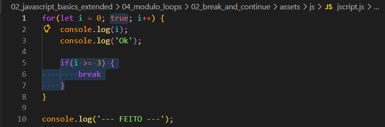
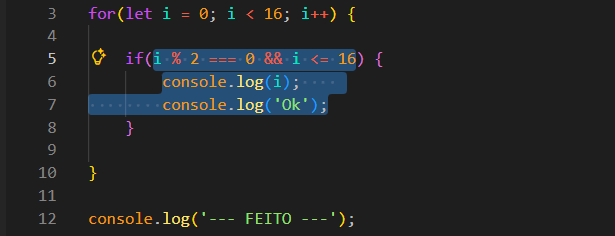
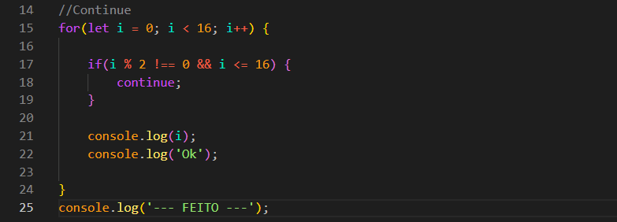

Break and Continue
Intro
Aqui iremos continar com o mesmo exemplo da aula anterior, para poder entender como podemos evitar que nosso codigo entre em um loop infinito.
Aqui iremos continar com o mesmo exemplo da aula anterior, para poder entender como podemos evitar que nosso codigo entre em um loop infinito.

Agora iremos fazer algumas alteracoes em nosso exemplo para entendermos melhor, ficando da seguinte forma:

Para evitarmos que nosso for seja ininito, podemos adicionar a ele uma condicional. Com esse exemplo acima, embora temos uma condicao inicial no for, para tornar esse for finito, adicionamos uma condicional de seguranca (break), para podermos evitar uma condicao infinita.
Nesse exemplo iremos ver se quisermos imprimir apenas os valores par, ficando da seguinte forma:

Podemos observar que dessa vez passamos os if para dentro do for para ser feito a verificacao antes de passar o valor de i assim passando apenas os valores par de i.
Agora iremos ver um exemplo da palavra reservada continue. Ficando da seguinte forma em nosso codigo:

O continue como podemos ver no exemplo acima, ira significar que quando a nossa condicao (if) for cumprida e o continue for chamado. Ao invez dele executar o restante do codigo, ele ira da por finalizado essa iteracao, no caso nao o ciclo mas a iteracao